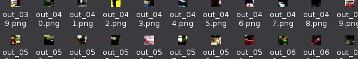

👹 ARTSTUFF.WTF
Hi friends, this week I wanted to share some bittersweet news. Artstuff.wtf as a weekly listing site/email list for DIY art and music (etc) list will be ending next month. I am moving to New York where I've accepted a professorship position at Purchase College (SUNY Purchase). I began Artstuff.wtf as "Weekend Events" in October 2016, to share Los Angeles events that looked interesting and to find friends to join me. I'll be continuing to post and email weekly until I leave at the end of July 2018. I'm thinking about posting a list of DIY art and music orgs and venues worthy of attention and exploration or will turn this into something else. I'm open to your ideas. Warmly, Lee

FRI 6/22
Late Night at La Brea Tar Pits and Cave of Forgotten Dreams
La Brea Tar Pits
5pm - 8pm
FREE entrance ($8/$10 for Cave of Forgotten Dreams in 3D)
Join us for Late Night Fridays at the Tar Pits. All summer long through August 31, the La Brea Tar Pits and Museum will be open from 5:00 to 8:00 pm on Fridays with Free General Admission. Plus, add on exciting special activities only offered during our Late Night Fridays. Walk around the park and visit our active excavation sites Project 23 and Pit 91. Our scientists and volunteers are digging up new fossil finds every day. And get an up-close look at what a pit dig looks like in our Observation Pit. Watch our scientists clean and prepare fossils in our Fossil Lab and explore our exhibits showcasing fossils dug up right from the Tar Pits. Stand next to mammoths, saber-toothed cats, giant ground sloths, dire wolves, and more. Screening of Werner Herzog's Cave of Forgotten Dreams in 3D at 6:30pm
LINK

SAT 6/23
DJ Godfather with Wheez-ie and Bianca Oblivion
Cheetahs Club
9pm - 1:30am
$12/$15
DJ Godfather hails from Detroit and is known as the founding father of the GhettoTech Genre. Wheez-ie folds GhettoTech into jungle and techno. Bianca Oblivion - label boss, co-founder of Club Aerobics and NTS Radio Show produces her sound with east coast club, uk bass and afro-brazilian rhythms.
LINK
Directory, LSR & The BackRoom: Discwoman
PRIVATE LOCATION (RSVP for address)
10pm - 6am
$10/$15/$20
Umfang, Ciel, and SHYBOI represent Discwoman, demonstrating categorical dance music energy, the beauty of uncategorized sounds, and a powerful, worldwide community. Discwoman is a New York based collective, booking agency, and event platform representing and showcasing female-identified talent in the electronic music community.
LINK

SUN 6/24
Modular On The Spot
North Atwater Park
3:30pm
FREE
"Modular on the Spot" is a nomadic feast in the physical sense of the word: a monthly performance held at an outdoor location in Los Angeles. The location is revealed a couple of days in advance where modular synthesists -- aided only by a generator and a sound system -- come together for an evening of electronic music. The performance concept adheres to three strict rules: always outside, always free and artists are required to use only modular synths during their performance. Performances this month by Omnichord, Carianoff, Bryan Curt Kosters, Carlos Colon, JStory
LINK
Accessioning Access: Social Reflexivity within Archival Practice
3307 W Washington
4pm - 6pm
FREE
This conversation celebrates the closing of Ann Harezlak's participatory reading environment, "An Archive-in-Residence," created for her BOOKSHELVES residency at 3307 W Washington Blvd. Jessica Gambling, Museum Archivist at the Los Angeles County Museum of Art (LACMA), Karly Wildenhaus, arts researcher and library worker, and Amanda Martin Katz, artist, writer and organizer of 3307 W Washington Blvd, will provide a range of viewpoints on social reflexivity within archival practice. Moderated by Ann Harezlak (Digital Art Humanities Research Assistant, Getty Research Institute). Following from Ann Harezlak's reading environment "An Archive-in-Residence," created for her 3307 BOOKSHELVES residency, this panel discussion will explore relationships between authority, organization and user-ship within emerging archival practices. As the way information is organized informs how it is comprehended, what are the responsibilities of archivists and other history-makers in writing socially reflexive public narratives? How does organization determine user-ship, and how can archival systems be open to culturally-informed lexical shifts in their vocabularies? Who are we archiving for?
LINK

ABOUT
ARTSTUFF.WTF is a minimal website listing page for selected mostly DIY art (and etc) events going on around Los Angeles. It is a personal list of 5 - 10 events sent out to friends weekly, and made available online here for bookmarking and quick reference. There is an archive of past listings. Sign up to receive weekly emails. Made by Lee Tusman.